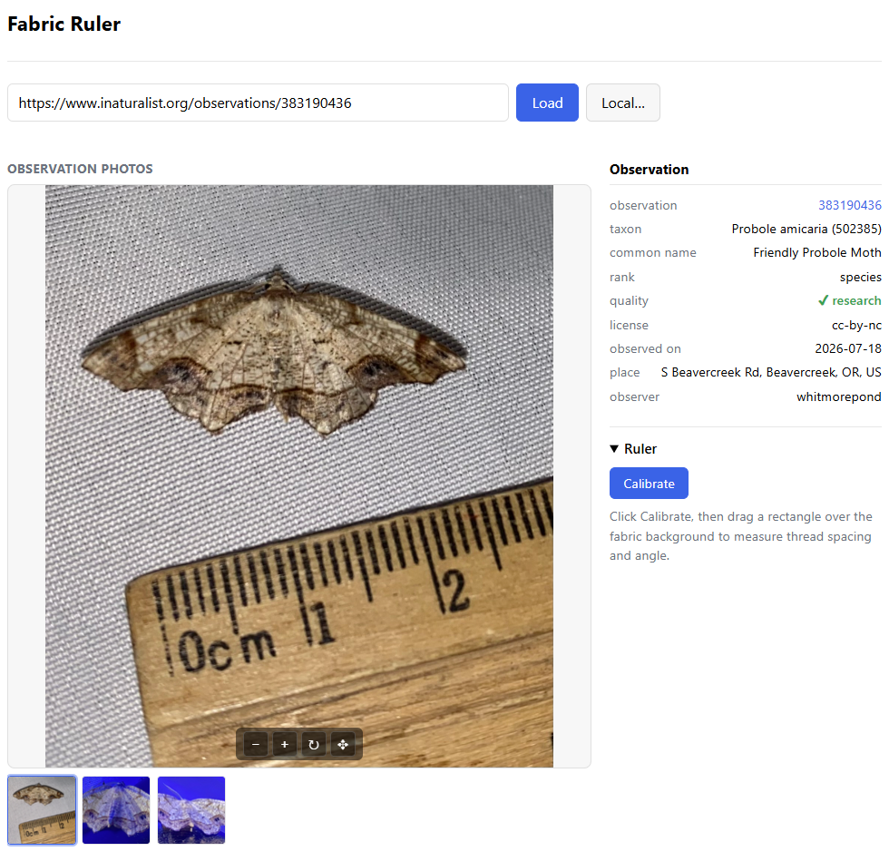
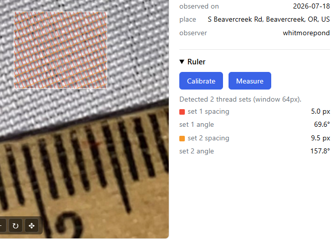
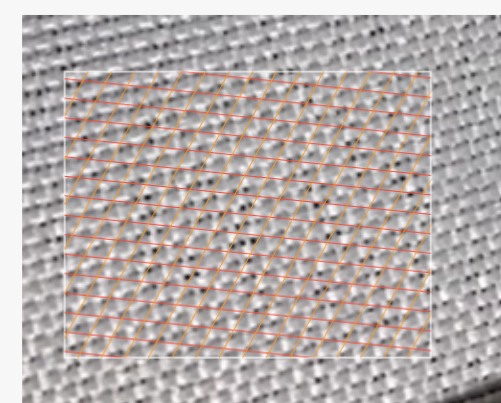
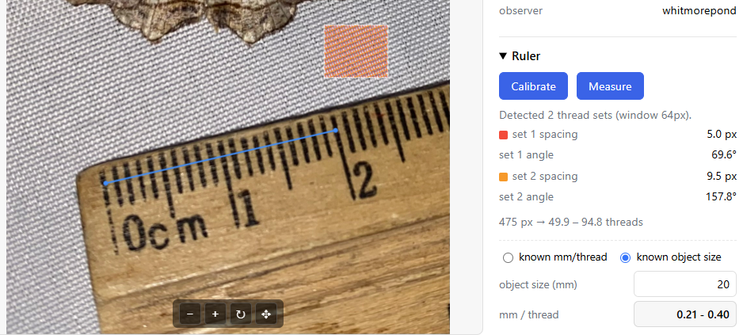
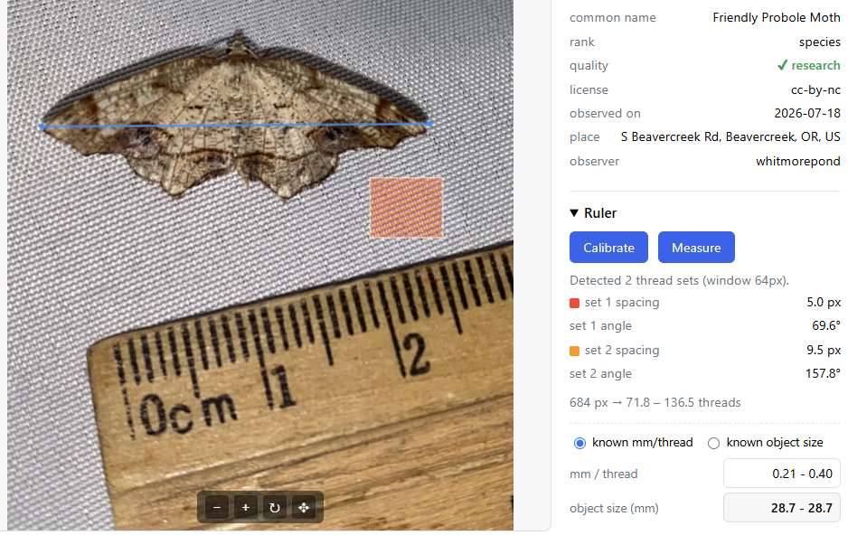
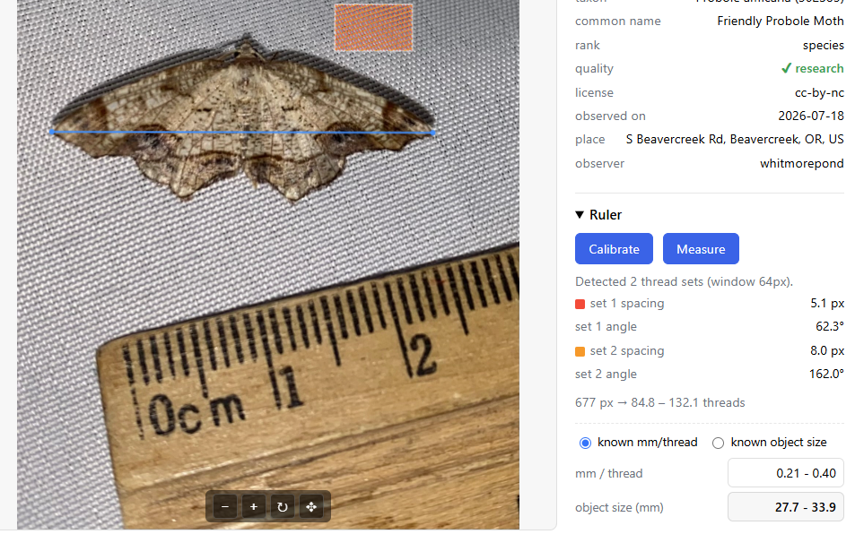
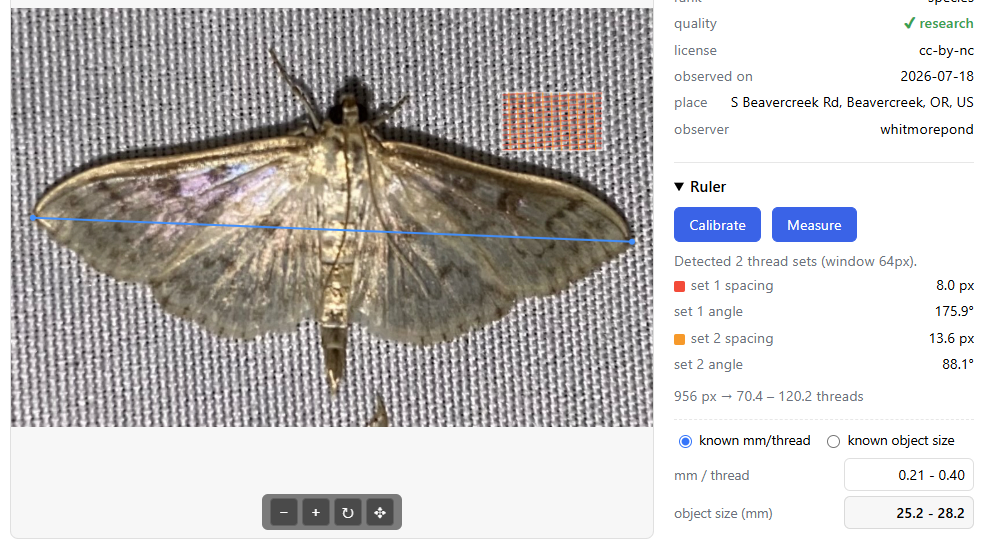

Measure real-world sizes from a photo by using the regular weave of a fabric background as a built-in ruler. Works on iNaturalist observations or your own images — everything runs in your browser.
→ Open the Fabric Ruler
Use the observation link from iNaturalist (e.g.
https://www.inaturalist.org/observations/383190436) or load
image from you computer.

Open the Ruler panel on the right and click Calibrate. You drag a rectangle over a clean patch of the woven background — away from the specimen and other objects.
The tool runs a 2D FFT over that patch and reports up to two thread sets (the warp and weft), each with its spacing in pixels and its angle. A small preview swatch shows the detected grid drawn in red and orange over the weave.


Click Measure and drag a line across something whose real size you know — here, the 0–2 cm span of the real ruler (20 mm). The panel shows the line length in pixels and how many threads it spans.
Choose the known object size mode, type the real length
(20 mm), and the tool reports the physical size of a single
thread as an x – y range (one value per thread
set). That range is your calibration.

Switch to the known mm/thread mode. Now you can type (copy-paste) the known mm/thread metric for your fabric (in this case it carried on mm/thread range you just derived).
Now Measure a line across the specimen — e.g. the wingspan
— and read the estimated real size as an
x – y range in millimetres.


As long as the fabric is the same, the estimated mm/thread can be reused, but re-calibration is needed to take into account the changed distance from the fabric.

x – y range brackets the estimate between the
finer and coarser thread scales.